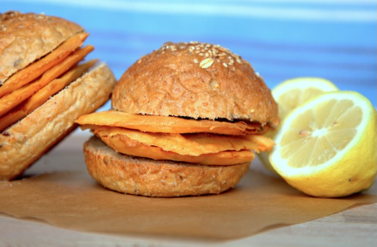
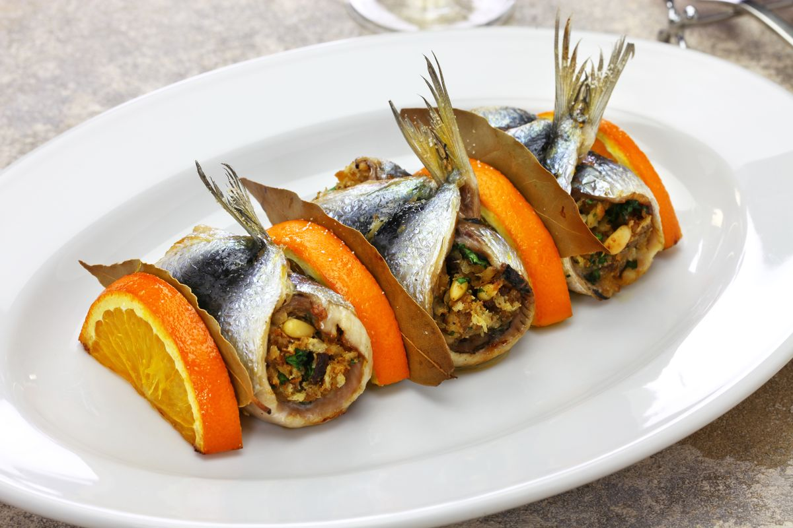
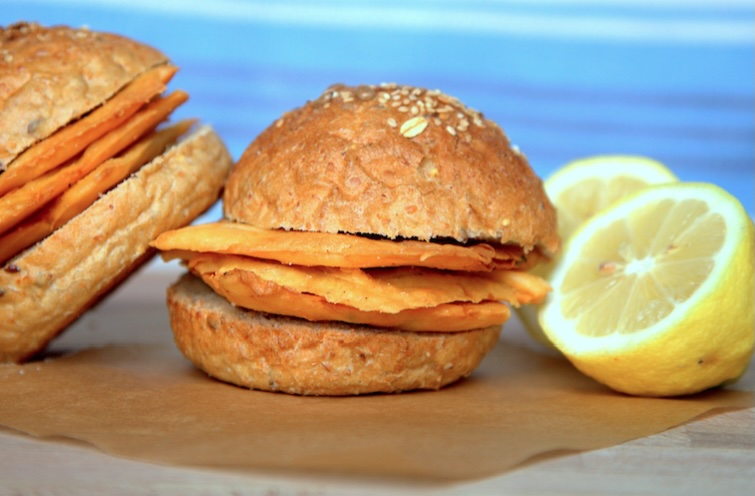
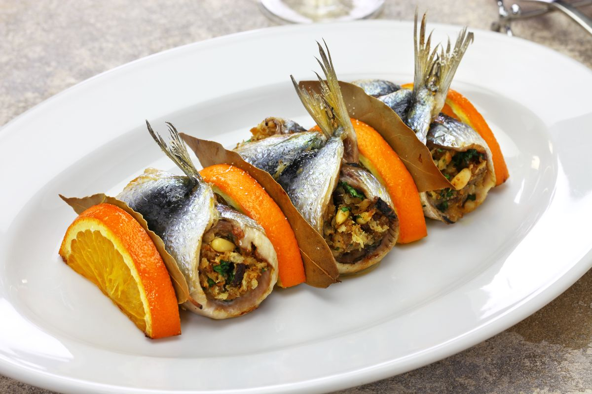

I tour di GoPalermo
Food Tour
Mercato della Vucciria
Scopri la vera anima di Palermo con un food tour
nel mercato storico della Vucciria! Assaggia
specialità locali e scopri i segreti della cucina
siciliana direttamente dai venditori.
Scopri la Vucciria
Vivi i colori vivaci e i sapori intensi del mercato della Vucciria. In questo food tour guidato, esplorerai bancarelle tradizionali, assaggerai deliziose specialità locali e scoprirai la ricca cultura culinaria siciliana.
Cosa include?
•Degustazioni di prodotti tipici siciliani
•Piatti di pesce preparati sul momento
•Guida locale esperta
Orari di partenza: Tutti i giorni alle 11:00 – 13:30 – 14:00
Tour di Palermo in
ApeCalessino Vintage
Esplora Palermo a bordo di un’iconica ApeCalessino!
Goditi il tour
Scopri la città in modo originale, attraversando vicoli e piazze con l’ApeCalessino, il mitico mezzo italiano. La partenza è dal centro di Palermo
Visiterai:
•Cattedrale di Palermo
•Piazza Pretoria
•Teatro Massimo
•Mercato di Ballarò
Orari di partenza: Tutti i giorni: 10:00 – 11:15 – 12:30 – 13:45 – 15:00 – 16:15 – 17:30
Tour delle
Sette Chiese
Accompagnato da una guida esperta, scoprirai il significato culturale e religioso di ogni tappa, tra cui anche altre meraviglie nascoste nei vicoli della città vecchia
Un affascinante Tour
Partendo da Porta Carini, all’ingresso del mercato del Capo, visiterai alcune delle chiese più significative del centro storico di Palermo, con soste gastronomiche lungo il percorso per gustare specialità locali.
Cosa include?
•Visita guidata a 2 chiese principali
•3 soste gastronomiche nei mercati storici (Capo e Vucciria)
•Percorso a piedi tra vicoli, mercati e luoghi simbolici della città
•Storie, aneddoti e leggende popolari di Palermo
Orari di partenza variabili su prenotazione
Scopri l’arte della cucina
con una
Cooking Class
Fresh Pasta in All Sauces
Pasta fresca (ripiena inclusa) + condimenti
 



The Real Sicilian Tradition
Caponata, panelle, crocchè, sarde a beccafico
Discovering the Market
Tour mercato + antipasto, primo, secondo, dolce
Pasta, Pizza e Mandolino
Pizza, pasta fresca e salsa di pomodoro
Tutte includono transfer andata/ritorno e bevande